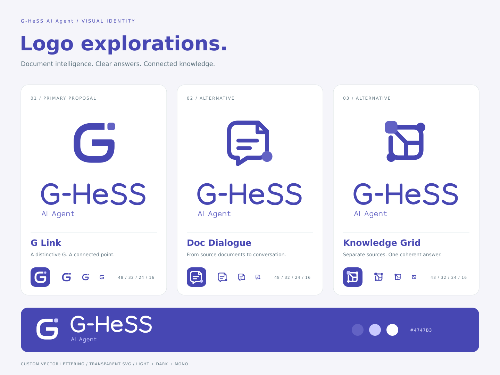

G-HeSS AI Agent · 로고 시안
사내 문서 검색과 근거 기반 답변을 위한 아이덴티티. 아래 세 시안은 아이콘 단독, 텍스트 단독, 가로 조합형으로 사용할 수 있습니다.

01 · 추천 시안G Link
G의 열린 형태와 독립된 연결점을 결합했습니다. 서비스 이름을 직접 드러내며 작은 앱 아이콘에도 적용하기 쉬운 방향입니다.
02 · 문서와 대화Doc Dialogue
접힌 문서와 말풍선을 한 형태로 묶었습니다. 문서를 바탕으로 대화하고 답을 찾는 서비스의 역할을 표현합니다.
03 · 지식의 연결Knowledge Grid
분산된 정보가 하나의 구조로 연결되는 모습입니다. 여러 문서의 근거를 종합하는 AI 에이전트의 성격을 담았습니다.
표기: G-HeSS AI Agent · 기본 색상: Indigo #4747B3 / 보조 #6262C4 / 밝은 포인트 #C9C9FF
로고의 모든 글자는 벡터로 작성되어 별도 글꼴 설치가 필요 없습니다. 최종안 선택 전 검토용 시안입니다.